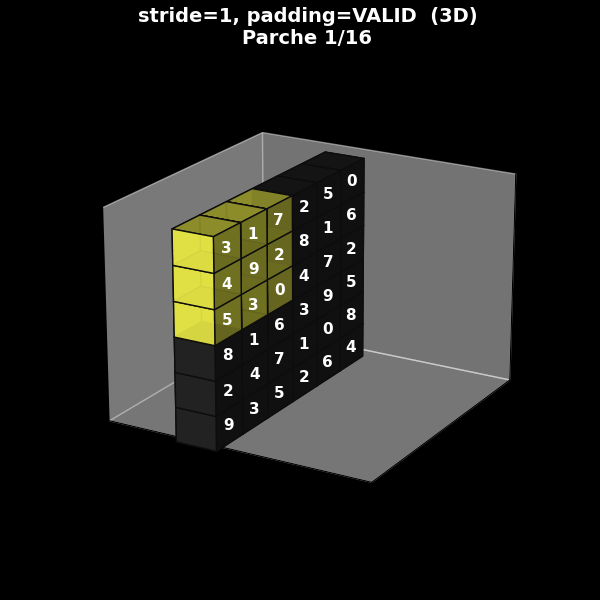
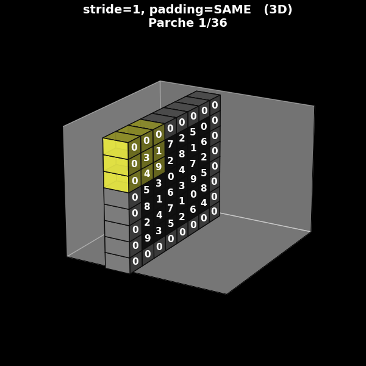
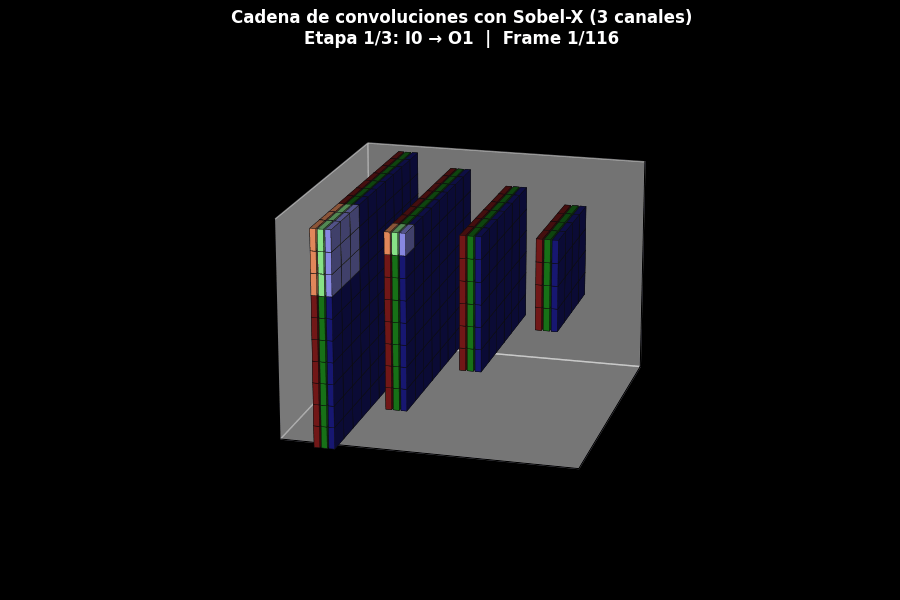

6. Capítulo 5: Introduciendo conceptos de CNN#
6.1. Convolución, stride, padding, perspectiva 3D, canales y pooling#
Este cuaderno funciona como guion en estilo documental científico para un video sobre redes neuronales convolucionales aplicadas a imágenes satelitales. El objetivo es ir desde un ejemplo numérico muy concreto hasta una visión conceptual de las CNN modernas, sin perder rigor y manteniendo una narrativa clara y visual.
6.2. Introducción: por qué empezar por la convolución#
A partir de este video comenzaremos un recorrido conceptual que nos permitirá, en materiales posteriores, comprender cómo operan las redes neuronales convolucionales (CNN). Antes de hablar de capas, neuronas, funciones de activación, propagación hacia adelante o retropropagación del error, es imprescindible entender una operación que constituye un pilar fundamental en cualquier CNN moderna: la convolución.
Pero incluso antes de llegar a la convolución, debemos detenernos en un concepto básico y profundamente relevante en teledetección: el parche satelital.
6.3. El parche satelital: unidades locales de información#
Un parche es simplemente un recorte rectangular de una imagen satelital o aérea. En lugar de procesar toda la escena de una sola vez, solemos dividirla en pequeños bloques, por ejemplo de 32×32 o 64×64 píxeles.
Estos parches pueden generarse:
Sin solapamiento, como un mosaico que particiona la escena en bloques disjuntos.
Con solapamiento, desplazando una ventana deslizante que avanza píxel a píxel y captura múltiples vistas del mismo patrón local.
El objetivo es claro: capturar información local.
Toda CNN, incluso las más profundas, comienza analizando la imagen a través de pequeñas regiones locales. Entender qué es un parche y cómo se procesa es el primer paso para comprender el funcionamiento interno del modelo.

Fig. 6.1 parches con overlap#

Fig. 6.2 parches con overlap#
6.4. Filtros sobre un parche: clásicos y aprendidos#
Dentro de cada parche actúan los filtros, y aquí conviene distinguir dos tipos muy diferentes.
6.4.1. Filtros clásicos de procesamiento de imágenes#
Por un lado están los filtros clásicos de procesamiento de imágenes: Sobel, Prewitt, Laplaciano, Gaussian blur, Gabor, entre otros. Cada uno tiene una estructura fija y está diseñado para cumplir una función bien definida:
detectar bordes verticales u horizontales,
resaltar contornos cerrados,
suavizar ruido,
o identificar texturas periódicas.
Estos operadores fueron creados mucho antes de las redes neuronales y todavía son ampliamente utilizados para el análisis exploratorio de imágenes.
6.4.2. Filtros aprendidos por una CNN#
Por otro lado están los filtros aprendidos por una CNN. A diferencia de los filtros clásicos, sus valores no se establecen manualmente: la red los aprende automáticamente durante el entrenamiento mediante descenso de gradiente.
Curiosamente, las primeras capas de una CNN suelen aprender filtros muy parecidos a Sobel o Prewitt. Esto no ocurre porque alguien los programe así, sino porque detectar cambios locales —bordes, contrastes, texturas suaves— es una necesidad fundamental para cualquier sistema de visión artificial.
6.5. Ejemplo explícito: del parche 6×6 al filtro Sobel-X#
Con estos conceptos en mente, podemos avanzar hacia el corazón del video: la convolución. Para entenderla de manera transparente, utilizaremos un ejemplo completamente explícito.
Consideremos el siguiente parche numérico de 6×6, donde cada número representa la intensidad de un píxel:
\( I = \begin{bmatrix} 3 & 1 & 7 & 2 & 5 & 0 \\ 4 & 9 & 2 & 8 & 1 & 6 \\ 5 & 3 & 0 & 4 & 7 & 2 \\ 8 & 1 & 6 & 3 & 9 & 5 \\ 2 & 4 & 7 & 1 & 0 & 8 \\ 9 & 3 & 5 & 2 & 6 & 4 \end{bmatrix} \)
Sobre este parche aplicaremos el filtro Sobel-X, cuya estructura es:
\( K = \begin{bmatrix} 1 & 0 & -1 \\ 2 & 0 & -2 \\ 1 & 0 & -1 \end{bmatrix} \)
Este kernel estima la componente horizontal del gradiente, es decir, cuánto cambia la intensidad al pasar de izquierda a derecha:
Valores positivos indican que la imagen se intensifica hacia la derecha.
Valores negativos indican que se oscurece.
Valores cercanos a cero indican regiones más homogéneas.
# Construcción del parche y del kernel en Python
```pyhton
import numpy as np
I = np.array([
[3, 1, 7, 2, 5, 0],
[4, 9, 2, 8, 1, 6],
[5, 3, 0, 4, 7, 2],
[8, 1, 6, 3, 9, 5],
[2, 4, 7, 1, 0, 8],
[9, 3, 5, 2, 6, 4]
], dtype=float)
K = np.array([
[ 1, 0, -1],
[ 2, 0, -2],
[ 1, 0, -1]
], dtype=float)
I, K
```
6.6. ¿Qué es la convolución? (o, en la práctica, la correlación cruzada)#
La operación de convolución —o más exactamente, de correlación cruzada, que es la forma práctica utilizada por la mayoría de las implementaciones de CNN— consiste en:
Superponer el kernel sobre una ventana del mismo tamaño dentro del parche.
Multiplicar cada valor de la ventana por el valor correspondiente del kernel.
Sumar todos los productos y asignar ese resultado a una posición de la salida.
Desplazar el kernel una columna hacia la derecha y repetir el proceso; una vez completada la fila, bajar un píxel y continuar.
En esencia, la convolución es un operador local que transforma vecindarios en valores.
Cuando el kernel recorre todo el parche, obtenemos un nuevo mapa que llamamos salida o feature map para ese filtro.
6.7. Primeros cálculos manuales:#
\( O_{1,1}\) y \(O_{1,2} \)
Calculemos juntos el primer valor de la salida, \(O_{1,1}\).
Tomamos la ventana 3×3 ubicada en la esquina superior izquierda:
\( W_1 = \begin{bmatrix} 3 & 1 & 7 \\ 4 & 9 & 2 \\ 5 & 3 & 0 \end{bmatrix} \)
Multiplicamos elemento por elemento por el kernel Sobel-X, sumamos todo y obtenemos: \(O_{1,1}\) = \(5\).
Ahora desplazamos el kernel una columna a la derecha. La nueva ventana es: \( W_2 = \begin{bmatrix} 1 & 7 & 2 \\ 9 & 2 & 8 \\ 3 & 0 & 4 \end{bmatrix} \)
Repetimos la multiplicación y la suma, obteniendo: \(O_{1,2}\) = \(0\).
Este procedimiento continúa hasta cubrir todas las posiciones posibles. El calculo general para \(O_{i,j}\) es:
\( O_{i,j} = \sum_{u=0}^{2} \sum_{v=0}^{2} W_{i+u,\,j+v}\, K_{u,v} \)
6.8. Tamaño de la salida y concepto de stride#
Como nuestro parche mide 6×6 y el filtro 3×3, y estamos avanzando de a un píxel (stride = 1), el tamaño de la salida será: \((6 - 3 + 1) \times (6 - 3 + 1) = 4 \times 4.\)
La salida completa (que aquí podemos precomputar) es:
$O = \n\begin{bmatrix}\n5 & 0 & -3 & 8\\n1 & 4 & -3 & -1\\n6 & 4 & -2 & -6\\n-9 & -4 & 5 & -10\n\end{bmatrix}\n\]
\( O_{4,4} = \begin{bmatrix} 5 & 0 & -3 & 8\\\ 1 & 4 & -3 & -1\\ 6 & 4 & -2 & -6\\ -9 & -4 & 5 & -10 \end{bmatrix} \)
Cada número indica cuán intensa es la variación horizontal en ese vecindario.
Valores de gran magnitud revelan bordes marcados; valores cercanos a cero indican transiciones suaves en la dirección horizontal.
En general, el stride define cuántos píxeles avanza el filtro en cada desplazamiento: * Con stride = 1 se examinan todas las posiciones posibles.
Con stride > 1 se descartan posiciones intermedias y se obtienen mapas más pequeños y más compactos.
```pyton
def conv_valid(img, kernel):
H, W = img.shape
kH, kW = kernel.shape
out_H = H - kH + 1
out_W = W - kW + 1
out = np.zeros((out_H, out_W), dtype=float)
for i in range(out_H):
for j in range(out_W):
patch = img[i:i+kH, j:j+kW]
out[i, j] = np.sum(patch * kernel)
return out
O = conv_valid(I, K)
O
```
6.9. El papel del padding#
En nuestro ejemplo hemos utilizado una convolución válida, sin padding: sólo ubicamos el kernel en posiciones donde cabe completamente dentro del parche.
Sin embargo, muchas arquitecturas modernas utilizan padding, que consiste en agregar un borde artificial —usualmente de ceros— alrededor de la imagen antes de aplicar la convolución. Esto permite que las capas convolucionales:
no reduzcan el tamaño espacial de la imagen en cada paso,
preserven mejor la información de los bordes,
y mantengan dimensiones constantes cuando así se desea (lo que a menudo se denomina same padding).

Fig. 6.3 Stride 1, con padding (same)#
6.10. Cuatro ejemplos 2D: combinaciones de stride y padding#
En la práctica, el comportamiento espacial de una convolución depende tanto del kernel como de la combinación de stride y padding. Para fijar ideas, consideramos cuatro configuraciones fundamentales:
Stride = 1, sin padding (valid, s = 1).
Stride = 1, con padding (same, s = 1).
Stride = 2, sin padding (valid, s = 2).
Stride = 2, con padding (same, s = 2).
En el video, cada uno de estos casos se muestra mediante un GIF 2D sobre fondo negro, donde se ve:
la imagen o el parche de entrada,
el filtro deslizándose,
y la construcción progresiva de la salida.
Estas animaciones permiten ver con claridad:
cuándo el filtro puede o no cubrir completamente los bordes,
cómo cambia el tamaño del mapa de salida al variar el stride,
y cómo el padding puede conservar las dimensiones espaciales originales.
Stride 1, sin padding (valid)

Fig. 6.4 Stride 1, sin padding (valid)#
Stride 1, con padding (same)
Fig. 6.5 Stride 1, con padding (same)#
Stride 2, sin padding (valid)

Fig. 6.6 Stride 2, sin padding (valid)#
Stride 1, con padding (same)

Fig. 6.7 Stride 2, con padding (same)#
6.11. De la visión 2D a la perspectiva 3D típica de las CNN#
En muchos artículos científicos y esquemas de arquitecturas CNN, los mapas de características no se muestran como matrices planas, sino como bloques tridimensionales:
El ancho y el alto representan las dimensiones espaciales.
La profundidad representa los canales o filtros.
Para conectar nuestra intuición 2D con esta representación, podemos tomar los mismos cuatro ejemplos de stride y padding y mostrarlos ahora en perspectiva 3D:
El parche de entrada se representa como un volumen (o una “lámina” si tiene un solo canal).
El filtro aparece como un pequeño bloque amarillo deslizándose sobre la cara frontal.
La salida se muestra como otro bloque, desplazado en el eje de profundidad, que se va completando conforme el filtro recorre la entrada.
Estos GIF 3D ayudan a entender por qué en la literatura se representan las CNN como cadenas de bloques tridimensionales apilados.
Stride 1, sin padding (valid)
{kind=link}
Fig. 6.8 Stride 1, sin padding (valid)#
Stride 1, con padding (same)
{kind=link}

Fig. 6.9 Stride 1, con padding (same)#
Stride 2, sin padding (valid)
{kind=link}

Fig. 6.10 Stride 2, sin padding (valid)#
Stride 1, con padding (same)

Fig. 6.11 Stride 2, con padding (same)#
6.12. Convoluciones secuenciales: una cadena de salidas (O)#
En una CNN real, las convoluciones no aparecen aisladas. Son capas que se encadenan: la salida de una se convierte en la entrada de la siguiente.
Podemos representarlo de forma simplificada como:
\( I_0 \; \xrightarrow{\text{conv}} \; O_1 \; \xrightarrow{\text{conv}} \; O_2 \; \xrightarrow{\text{conv}} \; O_3. \)
En el GIF 3D correspondiente se visualiza:
un primer bloque de entrada (I_0),
un filtro que recorre (I_0) y genera (O_1),
luego el mismo filtro (o un filtro distinto) recorriendo (O_1) para producir (O_2),
y finalmente una tercera aplicación que produce (O_3).
Esta cadena muestra con claridad que:
hasta que no se genera completamente (O_1), no se puede aplicar la siguiente convolución sobre ella,
y que las CNN construyen representaciones de creciente complejidad encadenando operaciones locales sencillas.

Fig. 6.12 Multiples canales#
6.13. Ejemplos hasta aquí: un solo canal. ¿Qué representa un canal?#
Hasta este punto, tanto en 2D como en 3D, hemos trabajado con un parche de un solo canal: cada píxel se describe con un único valor (por ejemplo, la reflectancia de una banda espectral específica).
En la práctica, sin embargo, las imágenes satelitales y las CNN modernas trabajan casi siempre con múltiples canales:
Imágenes RGB: 3 canales (rojo, verde, azul).
Imágenes multiespectrales (como Sentinel-2): múltiples bandas (por ejemplo, azul, verde, rojo, infrarrojo cercano, etc.).
Datos de radar SAR: distintas polarizaciones o incluso componentes complejos.
En este contexto, un canal es una “capa” de información superpuesta espacialmente a las demás. Cada píxel ya no es un único número, sino un vector de valores, uno por cada canal.
6.14. Filtros 3D: del kernel 3×3 al kernel 3×3×C#
Cuando una imagen tiene (C) canales, un filtro convolucional deja de ser una simple matriz 2D de tamaño 3×3. Pasa a ser un tensor 3D de tamaño 3×3×C:
En cada canal, el filtro tiene su propio pequeño kernel 3×3.
La convolución se aplica canal por canal.
Los resultados parciales se suman para producir un único valor de salida por posición y por filtro.
Para visualizar esto, mostramos un GIF 3D en el que:
cada panel de la cadena (I_0, O_1, O_2, O_3) tiene tres canales, representados por bloques con colores distintos (por ejemplo, rojizo, verdoso y azulado),
el filtro se ve actuando sobre los tres canales,
y el resultado de cada etapa combina esa información multicanal en un nuevo bloque.
Esta representación ayuda a entender cómo una CNN integra, en cada convolución, información proveniente de varias bandas o canales simultáneamente.
{kind=link}

Fig. 6.13 Multiples canales#
6.15. Pooling: reducción espacial y robustez frente a traslaciones#
Finalmente, junto a la convolución suele aparecer otra operación esencial: el pooling.
El pooling reduce la resolución espacial seleccionando, por ejemplo, el valor máximo dentro de regiones 2×2 (max-pooling). Esta operación:
hace que el modelo sea más robusto a pequeñas traslaciones (si un borde se desplaza levemente, el máximo de la región suele seguir capturando su presencia),
reduce significativamente la cantidad de información que debe procesar la red en etapas posteriores,
y favorece una cierta invariancia espacial a nivel local.
6.16. Conclusión: cimientos conceptuales para CNN en teledetección#
Todo lo que hemos explicado —la extracción de parches, la acción de un filtro, la operación de convolución, el efecto del stride, la función del padding, la visualización en 2D y en 3D, la aplicación secuencial de convoluciones, la noción de canal y la extensión a filtros multicanal, y finalmente el rol del pooling— constituye una parte fundamental del funcionamiento de una CNN.
No es toda su matemática, porque una CNN completa involucra funciones de activación, capas densas, embeddings, propagación hacia adelante, retropropagación del error, optimización y regularización. Pero sin comprender la convolución y estas operaciones asociadas resulta imposible entender cómo las CNN procesan imágenes satelitales.
Este video establece, por lo tanto, los cimientos conceptuales necesarios para avanzar hacia arquitecturas más complejas. En los próximos materiales veremos cómo estas operaciones se encadenan, cómo se aprenden los filtros, cómo emergen representaciones internas de múltiples niveles y cómo, a partir de una operación local tan simple como la que acabamos de analizar, surge la capacidad de interpretar escenas satelitales completas con notable precisión.
6.17. Activaciones de filtros aprendidos#
En las secciones anteriores se introdujo la convolución como una operación matemática fundamental en las redes neuronales convolucionales, mediante la cual una imagen es transformada por un conjunto de filtros aprendidos.
Hasta ahora, el énfasis estuvo puesto en la estructura de la operación y en el rol de los filtros como parámetros entrenables.
En esta sección se introduce un nuevo concepto clave: el mapa de activación, que permite observar el efecto concreto de esos filtros sobre una imagen real.
6.17.1. Definición matemática de activación#
Sea una imagen de entrada
[
\mathbf{X} \in \mathbb{R}^{H \times W \times C}
]
y un filtro convolucional aprendido
[
\mathbf{W}^{(k)} \in \mathbb{R}^{m \times m \times C}
]
donde (k) indexa al filtro dentro de una capa.
La activación asociada al filtro (k) se define como:
[ \mathbf{A}^{(k)} = \mathbf{X} * \mathbf{W}^{(k)} ]
donde (*) denota la operación de convolución discreta.
El resultado es un mapa bidimensional:
[ \mathbf{A}^{(k)} \in \mathbb{R}^{H’ \times W’} ]
cuyo valor en cada posición espacial indica la intensidad de respuesta del filtro.
En forma explícita:
[ \mathbf{A}^{(k)}(x,y) = \sum_{i,j,c} \mathbf{W}^{(k)}(i,j,c),\mathbf{X}(x+i, y+j, c) ]
6.17.2. Interpretación conceptual#
Esta expresión formaliza una idea central:
Un filtro convolucional define qué patrón buscar; el mapa de activación indica dónde aparece y con qué intensidad.
6.17.3. Qué representa la visualización#
El GIF asociado a esta sección muestra el conjunto de mapas de activación:
\(\{\mathbf{A}^{(1)}, \mathbf{A}^{(2)}, \dots, \mathbf{A}^{(N)}\}\)
correspondientes a los filtros de la primera capa convolucional de una red ResNet18 preentrenada.
Todos los mapas se calculan en paralelo a partir de la misma imagen de entrada.
La numeración de los filtros es un índice interno y no implica orden temporal ni jerarquía de aprendizaje.
6.17.4. Aporte conceptual#
Esta sección explicita el paso desde los datos crudos a una representación funcional:
[ \mathbf{X} ;\longrightarrow; {\mathbf{A}^{(k)}}_{k=1}^{N} ]
La imagen deja de ser un conjunto de píxeles y pasa a representarse como un conjunto de funciones espaciales sensibles a distintos patrones visuales.
En el contexto de imágenes satelitales, estas funciones suelen responder a bordes, texturas, patrones geométricos y transiciones agua–tierra, sentando las bases para representaciones jerárquicas más complejas en capas posteriores.